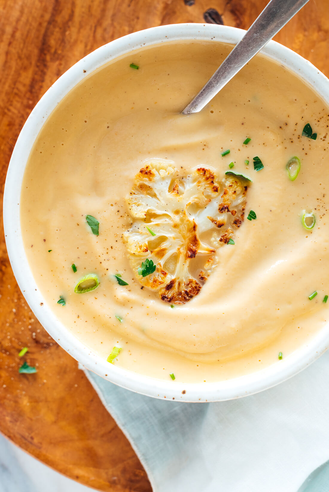

Roasted Cauliflower Soup

Description
Recipe found on Cookie and Kate.
Cooked at Christmas dinner and made often afterwards.
This cauliflower soup recipe is the best! Roasted cauliflower makes it taste amazing,
and a little butter (instead of cream) makes it luxuriously creamy.
Recipe yields 4 bowls of soup.
Ingredients
- 1 large head cauliflower (about 2 pounds), cut into bite-size florets
- 3 tablespoons extra-virgin olive oil, divided
- Fine sea salt
- 1 medium red onion, chopped
- 2 cloves garlic, pressed or minced
- 4 cups (32 ounces) vegetable broth
- 2 tablespoons unsalted butter
- 1 tablespoon fresh lemon juice, or more if needed
- Scant ¼ teaspoon ground nutmeg
- For garnish: 2 tablespoons finely chopped fresh flat-leaf parsley, chives and/or green onions
Steps
- Preheat the oven to 425 degrees Fahrenheit. If desired, line a large, rimmed baking sheet with parchment paper for easy cleanup.
- On the baking sheet, toss the cauliflower with 2 tablespoons of the olive oil until lightly and evenly coated in oil. Arrange the cauliflower in a single layer and sprinkle lightly with salt. Bake until the cauliflower is tender and caramelized on the edges, 25 to 35 minutes, tossing halfway.
- Once the cauliflower is almost done, in a Dutch oven or soup pot, warm the remaining 1 tablespoon olive oil over medium heat until shimmering. Add the onion and ¼ teaspoon salt. Cook, stirring occasionally, until the onion is softened and turning translucent, 5 to 7 minutes.
- Add the garlic and cook, stirring constantly, until fragrant, about 30 seconds, then add the broth.
- Reserve 4 of the prettiest roasted cauliflower florets for garnish. Then transfer the remaining cauliflower to the pot. Increase the heat to medium-high and bring the mixture to a simmer, then reduce the heat as necessary to maintain a gentle simmer. Cook, stirring occasionally, for 20 minutes, to give the flavors time to meld.
- Once the soup is done cooking, remove the pot from the heat and let it cool for a few minutes. Then, carefully transfer the hot soup to a blender, working in batches if necessary. (Do not fill past the maximum fill line or the soup could overflow!)
- Add the butter and blend until smooth. Add the lemon juice and nutmeg and blend again. Add additional salt, to taste (I usually add another ¼ to ¾ teaspoon, depending on the broth). This soup tastes amazing once it’s properly salted! You can also a little more lemon juice, if it needs more zing. Blend again.
- Top individual bowls of soup with 1 roasted cauliflower floret and a sprinkle of chopped parsley, green onion and/or chives. This soup keeps well in the refrigerator, covered, for about four days, or for several months in the freezer.
Home